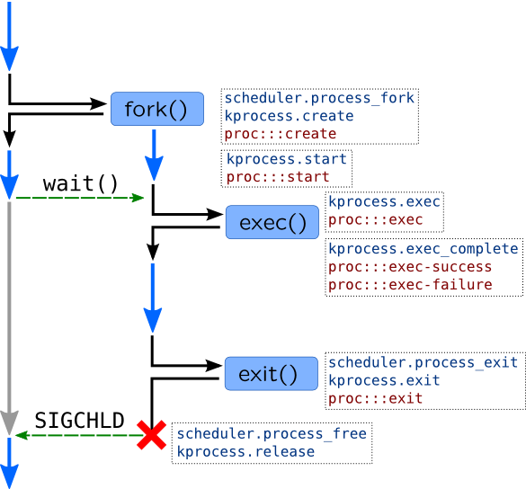

Exercise 3
Part 1
In the first part of this exercise we will need to check which fields of struct task_struct in Linux or proc_t are responsible for which aspects of process functioning. You will need to apply following changes to dump task scripts: timer probe has to be replaced to a pair of probes: proc:::exec-* and proc:::exit in DTrace or kprocess.exec_complete and kprocess.exit in SystemTap. We have used exit probes for execve() system call to collect command line arguments: they are not filled in unless execve() call finishes.
Here list of expected observations during this exercise:
-
When you run program with extra argument, it will be cleared in
main()function, so you will see original argument in exec-probe, but only 'X' letters when program exits. -
When you run program through symbolic link
lab3-1, VFS node which refer to a binary file will point to a regular filelab3. That node is represented byp_execfield ofproc_tin Solaris orexe_fileoftask_structin Linux.execname, however, will behave differently in Solaris and Linux. -
When you run program in chroot environment, root process directory will change from
/to/tmp/chroot.
Here are resulting scripts (they are not much different from original):
/**
* taskdump.stp
*
* Prints information about current task
* Extracts data from `task_struct`
*
* Tested on CentOS 7.0
*/
/**
* Structures `dentry` and `vfsmnt` were separate in older kernels.
* Newer kernels feature unified `path` structures that contain them both.
*
* SystemTap doesn't cache full path, so we have to use function task_dentry_path(),
* to get entire path in this manner:
* dentry = @cast(file, "file")->f_path->dentry;
* vfsmnt = @cast(file, "file")->f_path->mnt;
* return task_dentry_path(task, dentry, vfsmnt);
*
* Unfortunately, SystemTap has bug 16991, fixed in 2.6, so
* we limit output to a basename
*/
function file_path:string(task:long, file:long) {
if(@defined(@cast(file, "file")->f_vfsmnt))
return d_name(@cast(file, "file")->f_dentry);
return d_name(@cast(file, "file")->f_path->dentry);
}
function task_root_path:string(task:long, fs_ptr:long) {
if(@defined(@cast(fs_ptr, "fs_struct")->rootmnt))
return d_name(@cast(fs_ptr, "fs_struct")->root);
return d_name(@cast(fs_ptr, "fs_struct")->root->dentry);
}
function task_pwd_path:string(task:long, fs_ptr:long) {
if(@defined(@cast(fs_ptr, "fs_struct")->pwdmnt))
return d_name(@cast(fs_ptr, "fs_struct")->pwd);
return d_name(@cast(fs_ptr, "fs_struct")->pwd->dentry);
}
/**
* Prints exectuable file name from `mm->exe_file` */
function task_exefile(task:long, mm_ptr:long) {
if(mm_ptr) {
printf("\texe: %s\n",
file_path(task, @cast(mm_ptr, "mm_struct")->exe_file));
}
}
/**
* Prints root and current dir of a task */
function task_paths(task:long, fs_ptr:long) {
if(fs_ptr) {
printf("\troot: %s\n", task_root_path(task, fs_ptr));
printf("\tcwd: %s\n", task_pwd_path(task, fs_ptr));
}
}
/**
* Prints arguments vector. Arguments are copied into process memory (stack)
* and located in memory area (mm->arg_start; mm_arg_end), of the strings that
* separated with NULL-terminators, i.e.:
* +-----+----+-------------+----+
* | cat | \0 | /etc/passwd | \0 |
* +-----+----+-------------+----+
* ^ ^
* arg_start arg_end
*
* WARNING: This is only a demostration functions, use cmdline_*() functions
* instead
*
* NOTE: functions user_string* read from current address space
* To get arguments from other processes, use Embedded C and
* function that look like proc_pid_cmdline
*/
function task_args(mm_ptr:long) {
if(mm_ptr) {
arg_start = @cast(mm_ptr, "mm_struct")->arg_start;
arg_end = @cast(mm_ptr, "mm_struct")->arg_end;
if (arg_start != 0 && arg_end != 0)
{
len = arg_end - arg_start;
nr = 0;
/*Выбираем первый аргумент*/
arg = user_string2(arg_start, "");
while (len > 0)
{
printf("\targ%d: %s\n", nr, arg);
arg_len = strlen(arg);
arg_start += arg_len + 1;
len -= arg_len + 1;
nr++;
arg = user_string2(arg_start, "");
}
}
}
}
/**
* Returns file descriptor using fd
* NOTE: see pfiles.stp
*/
function task_fd_filp:long(files:long, fd:long) {
return @cast(files, "files_struct")->fdt->fd[fd];
}
function task_fds(task:long) {
task_files = @cast(task, "task_struct", "kernel")->files;
if(task_files) {
max_fds = task_max_file_handles(task);
for (fd = 0; fd < max_fds; fd++) {
filp = task_fd_filp(task_files, fd);
if(filp) {
printf("\tfile%d: %s\n", fd, file_path(task, filp));
}
}
}
}
/**
* Prints start time of a process in seconds
* start time - monotonic
* real start time - boot time based
*
* NOTE: This function assumes that `timespec` is used, but these
* variables were replaced with u64 in kernel 3.17
*/
function task_start_time_x(task:long) {
if(@defined(@cast(task, "task_struct", "kernel")
->start_time)) {
start_time_sec = @cast(task, "task_struct", "kernel")
->start_time->tv_sec;
real_time_sec = @cast(task, "task_struct", "kernel")
->real_time->tv_sec;
printf("\tstart time: %ds\t real start time: %ds\n", start_time_sec, real_time_sec);
}
else {
real_time_sec = @cast(task, "task_struct", "kernel")
->real_start_time->tv_sec;
printf("\treal start time: %ds\n", real_time_sec);
}
}
/**
* Prints scheduler stats */
function task_time_stats(task:long) {
user = @cast(task, "task_struct", "kernel")->utime;
kernel = @cast(task, "task_struct", "kernel")->stime;
printf("\tuser: %s\t kernel: %s\n", cputime_to_string(user), cputime_to_string(kernel));
}
function dump_task(task:long) {
task_mm = @cast(task, "task_struct", "kernel")->mm;
task_fs = @cast(task, "task_struct", "kernel")->fs;
printf("Task %p is %d@%d %s\n", task, task_pid(task), task_cpu(task), task_execname(task));
task_exefile(task, task_mm);
task_paths(task, task_fs);
task_args(task_mm);
task_fds(task);
task_start_time_x(task);
task_time_stats(task);
}
probe kprocess.exec_complete, kprocess.exit {
dump_task(task_current());
}
#!/usr/sbin/dtrace -qCs /** * dumptask.d * * Prints information about current task once per second * Contains macros to extract data from `kthread_t` and its siblings * Some parts use standard translators `psinfo_t` and `lwpsinfo_t*` * * Tested on Solaris 11.2 */ int argnum; void* argvec; string pargs[int]; int fdnum; uf_entry_t* fdlist; #define PSINFO(thread) xlate(thread->t_procp) #define LWPSINFO(thread) xlate (thread) #define PUSER(thread) thread->t_procp->p_user /** * Extract pointer depending on data model: 8 byte for 64-bit * programs and 4 bytes for 32-bit programs. */ #define DATAMODEL_ILP32 0x00100000 #define GETPTR(proc, array, idx) \ ((uintptr_t) ((proc->p_model == DATAMODEL_ILP32) \ ? ((uint32_t*) array)[idx] : ((uint64_t*) array)[idx])) #define GETPTRSIZE(proc) \ ((proc->p_model == DATAMODEL_ILP32)? 4 : 8) #define FILE(list, num) list[num].uf_file #define CLOCK_TO_MS(clk) (clk) * (`nsec_per_tick / 1000000) /* Helper to extract vnode path in safe manner */ #define VPATH(vn) \ ((vn) == NULL || (vn)->v_path == NULL) \ ? "unknown" : stringof((vn)->v_path) /* Prints process root - can be not `/` for zones */ #define DUMP_TASK_ROOT(thread) \ printf("\troot: %s\n", \ PUSER(thread).u_rdir == NULL \ ? "/" \ : VPATH(PUSER(thread).u_rdir)); /* Prints current working directory of a process */ #define DUMP_TASK_CWD(thread) \ printf("\tcwd: %s\n", \ VPATH(PUSER(thread).u_cdir)); /* Prints executable file of a process */ #define DUMP_TASK_EXEFILE(thread) \ printf("\texe: %s\n", \ VPATH(thread->t_procp->p_exec)); /* Copy up to 9 process arguments. We use `psinfo_t` tapset to get number of arguments, and copy pointers to them into `argvec` array, and strings into `pargs` array. See also kernel function `exec_args()` */ #define COPYARG(t, n) \ pargs[n] = (n < argnum && argvec != 0) \ ? copyinstr(GETPTR(t->t_procp, argvec, n)) : "???" #define DUMP_TASK_ARGS_START(thread) \ printf("\tpsargs: %s\n", PSINFO(thread)->pr_psargs); \ argnum = PSINFO(thread)->pr_argc; \ argvec = (PSINFO(thread)->pr_argv != 0) ? \ copyin(PSINFO(thread)->pr_argv, \ argnum * GETPTRSIZE(thread->t_procp)) : 0;\ COPYARG(thread, 0); COPYARG(thread, 1); COPYARG(thread, 2); \ COPYARG(thread, 3); COPYARG(thread, 4); COPYARG(thread, 5); \ COPYARG(thread, 6); COPYARG(thread, 7); COPYARG(thread, 8); /* Prints start time of process */ #define DUMP_TASK_START_TIME(thread) \ printf("\tstart time: %ums\n", \ (unsigned long) thread->t_procp->p_mstart / 1000000); /* Processor time used by a process. Only for conformance with dumptask.d, it is actually set when process exits */ #define DUMP_TASK_TIME_STATS(thread) \ printf("\tuser: %ldms\t kernel: %ldms\n", \ CLOCK_TO_MS(thread->t_procp->p_utime), \ CLOCK_TO_MS(thread->t_procp->p_stime)); #define DUMP_TASK_FDS_START(thread) \ fdlist = PUSER(thread).u_finfo.fi_list; \ fdcnt = 0; \ fdnum = PUSER(thread).u_finfo.fi_nfiles; #define DUMP_TASK(thread) \ printf("Task %p is %d/%d@%d %s\n", thread, \ PSINFO(thread)->pr_pid, \ LWPSINFO(thread)->pr_lwpid, \ LWPSINFO(thread)->pr_onpro, \ PUSER(thread).u_comm); \ DUMP_TASK_EXEFILE(thread) \ DUMP_TASK_ROOT(thread) \ DUMP_TASK_CWD(thread) \ DUMP_TASK_ARGS_START(thread) \ DUMP_TASK_FDS_START(thread) \ DUMP_TASK_START_TIME(thread) \ DUMP_TASK_TIME_STATS(thread) #define _DUMP_ARG_PROBE(probe, argi) \ probe /argi < argnum/ { \ printf("\targ%d: %s\n", argi, pargs[argi]); } #define DUMP_ARG_PROBE(probe) \ _DUMP_ARG_PROBE(probe, 0) _DUMP_ARG_PROBE(probe, 1) \ _DUMP_ARG_PROBE(probe, 2) _DUMP_ARG_PROBE(probe, 3) \ _DUMP_ARG_PROBE(probe, 4) _DUMP_ARG_PROBE(probe, 5) \ _DUMP_ARG_PROBE(probe, 6) _DUMP_ARG_PROBE(probe, 7) \ _DUMP_ARG_PROBE(probe, 8) #define _DUMP_FILE_PROBE(probe, fd) \ probe /fd < fdnum && FILE(fdlist, fd)/ { \ printf("\tfile%d: %s\n", fd, \ VPATH(FILE(fdlist, fd)->f_vnode)); } #define DUMP_FILE_PROBE(probe) \ _DUMP_FILE_PROBE(probe, 0) _DUMP_FILE_PROBE(probe, 1) \ _DUMP_FILE_PROBE(probe, 2) _DUMP_FILE_PROBE(probe, 3) \ _DUMP_FILE_PROBE(probe, 4) _DUMP_FILE_PROBE(probe, 5) \ _DUMP_FILE_PROBE(probe, 6) _DUMP_FILE_PROBE(probe, 7) BEGIN { proc = 0; argnum = 0; fdnum = 0; } proc:::exec-*, proc:::exit { DUMP_TASK(curthread); } DUMP_ARG_PROBE(proc:::exec-*) DUMP_ARG_PROBE(proc:::exit) DUMP_FILE_PROBE(proc:::exec-*) DUMP_FILE_PROBE(proc:::exit)
Part 2
First of all we have to create several associative arrays which will use PID as a key (we can't use thread-local variables here because exit() can be called from any of process threads), and timestamp as a value. Final data will be kept in aggregations which we already learned in exercise 2.
We will use probes from the section Lifetime of a process. They are shown in the following picture:

However, we do not know PID at the time fork() is called so we will use thread-local variable for that. We can check return value of fork() in return probe and re-use timestamp saved previously if everything went fine and fork() has returned value greater than 1 or throw it away.
We wrote an ugly function task_args() to collect process arguments in dumptask.stp script. This data is available since SystemTap 2.5: kprocess.exec probe provides program's arguments in argstr argument. We will use curpsinfo->pr_psargs on Solaris as it keeps first 80 characters of command line to get rid of copying userspace arguments too. We will use timestamp variable in DTrace as a source of timestamps (again, a tautology). We will use local_clock_us() function as we do not care about CPU time skew.
Finally, to reduce memory footprint in SystemTap, we will reduce associative arrays sizes. Here are resulting scripts:
global tm_fork_start_par[128], tm_fork_start[128], tm_fork_end[128],
tm_exec_start[128], tm_exec_end[128], p_argstr[128];
global fork[128], postfork[128], exec[128], proc[128];
probe syscall.fork {
tm_fork_start_par[tid()] = local_clock_us();
}
probe syscall.fork.return {
if($return > 1) {
tm_fork_start[$return] = tm_fork_start_par[tid()];
delete tm_fork_start_par[tid()];
}
}
probe kprocess.start {
tm_fork_end[pid()] = local_clock_us();
}
probe kprocess.exec {
p_argstr[pid()] = argstr;
tm_exec_start[pid()] = local_clock_us();
}
probe kprocess.exec_complete {
tm_exec_end[pid()] = local_clock_us();
}
probe kprocess.exit {
argstr = p_argstr[pid()];
fork[execname(), argstr] <<< tm_fork_end[pid()] - tm_fork_start[pid()];
postfork[execname(), argstr] <<< tm_exec_start[pid()] - tm_fork_end[pid()];
exec[execname(), argstr] <<< tm_exec_end[pid()] - tm_exec_start[pid()];
proc[execname(), argstr] <<< local_clock_us() - tm_exec_end[pid()];
delete tm_fork_start[pid()]; delete tm_fork_end[pid()];
delete tm_exec_start[pid()]; delete tm_exec_end[pid()];
delete p_argstr[pid()];
}
probe timer.s(1) {
printf("%48s %8s %8s %8s %8s\n",
"COMMAND", "FORK", "POSTFORK", "EXEC", "PROC");
foreach([execname, args] in proc) {
printf("%10s %36s %6dus %6dus %6dus %6dus\n", execname, args,
@avg(fork[execname, args]),
@avg(postfork[execname, args]),
@avg(exec[execname, args]),
@avg(proc[execname, args]));
}
delete fork; delete postfork; delete exec; delete proc;
}
uint64_t tm_fork_start[int];
uint64_t tm_fork_end[int];
uint64_t tm_exec_start[int];
uint64_t tm_exec_end[int];
syscall::*fork*:entry {
self->tm_fork_start = timestamp;
}
syscall::*fork*:return
/arg1 > 0/
{
tm_fork_start[arg1] = self->tm_fork_start;
}
proc:::start {
tm_fork_end[pid] = timestamp;
}
proc:::exec {
tm_exec_start[pid] = timestamp;
}
proc:::exec-* {
tm_exec_end[pid] = timestamp;
}
proc:::exit
/ tm_fork_start[pid] > 0 && tm_fork_end[pid] > 0 &&
tm_exec_start[pid] > 0 && tm_exec_end[pid] > 0 /
{
@fork[curpsinfo->pr_fname, curpsinfo->pr_psargs] =
avg(tm_fork_end[pid] - tm_fork_start[pid]);
@postfork[curpsinfo->pr_fname, curpsinfo->pr_psargs] =
avg(tm_exec_start[pid] - tm_fork_end[pid]);
@exec[curpsinfo->pr_fname, curpsinfo->pr_psargs] =
avg(tm_exec_end[pid] - tm_exec_start[pid]);
@proc[curpsinfo->pr_fname, curpsinfo->pr_psargs] =
avg(timestamp - tm_exec_end[pid]);
tm_fork_start[pid] = 0; tm_fork_end[pid] = 0;
tm_exec_start[pid] = 0; tm_exec_end[pid] = 0;
}
tick-1s {
normalize(@fork, 1000); normalize(@postfork, 1000);
normalize(@exec, 1000); normalize(@proc, 1000);
printf("%32s %8s %8s %8s %8s\n",
"COMMAND", "FORK", "POSTFORK", "EXEC", "PROC");
printa("%10s %22s %@6dus %@6dus %@6dus %@6dus\n",
@fork, @exec, @postfork, @proc);
clear(@fork); clear(@postfork); clear(@exec); clear(@proc);
}